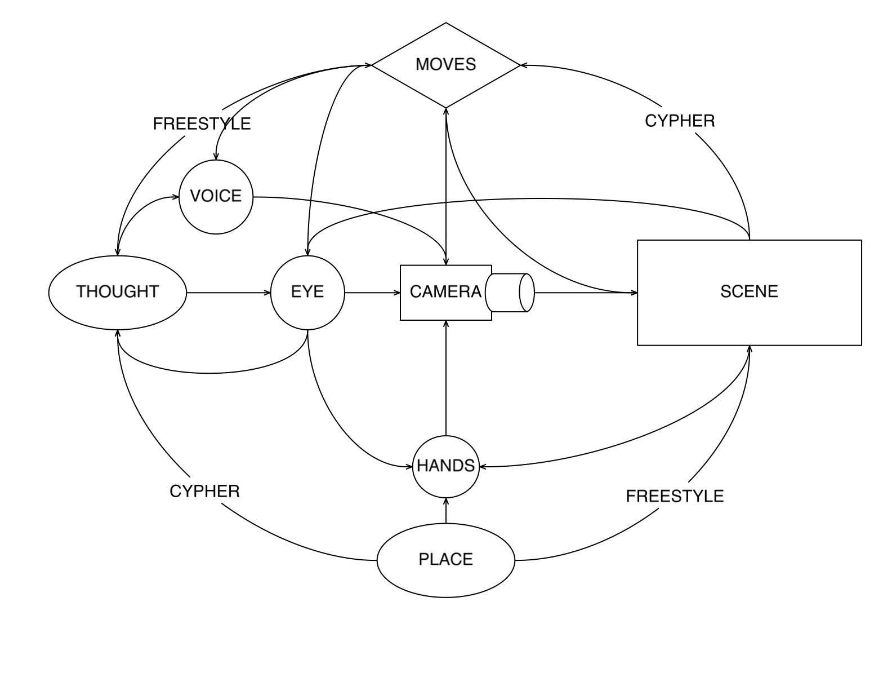
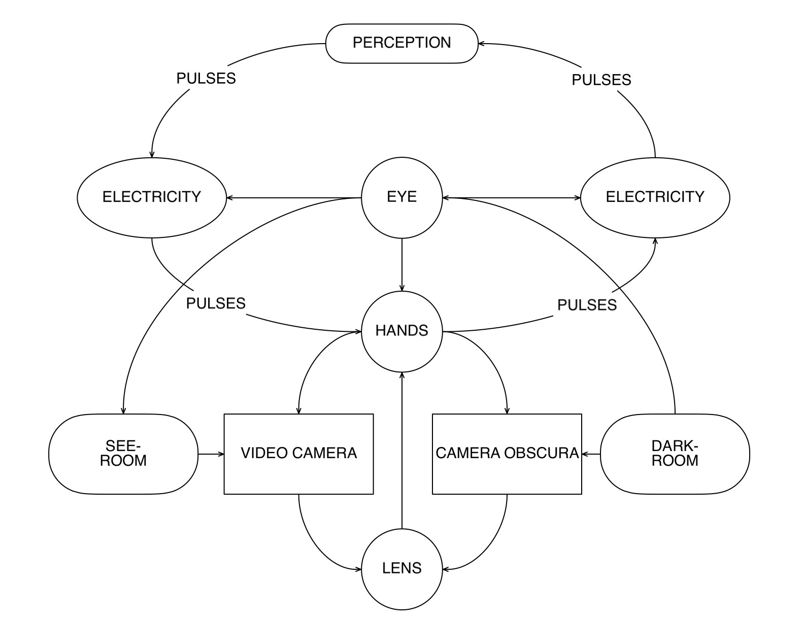

Quantum Balikbayan box distance movement transmission through state thresholds

fuge-self (fugitive) therefore border play cypher transmission
weak signal image feedback shadow optical eye
cypher electron feedback optical eye feedback image fugue
Border MA as a subset of the psychic BA transmission
an element of null/void or partial derivative WA as placeholder
Establish work flow: mal de ojo infiltrates border
GA optical eye feedback light density transformation WA equals incomplete KO

optical eye subset of the electronic transmission residue subset of distant light sunset of memory explosion
theoretical build/destroy, command transmolecularization entanglement between non-existent and existence
cypher cycling between empty and full, ellipsis